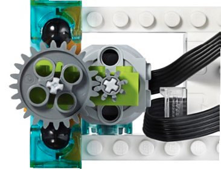
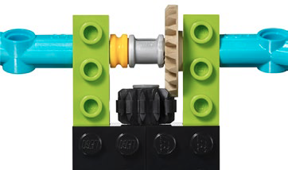
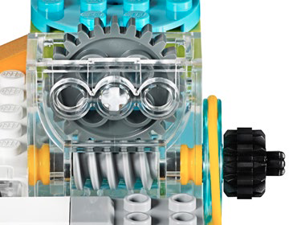

WeDo 2.0 搭建
（Building）
schedule60+ 分钟
stars初级
face1-2 年级
一. 齿轮（Gear）

- 【什么是齿轮？】齿轮是一个有齿的圆盘，与其他部件齿合后，可连续传递动力，使其他部件移动。
- 【什么是齿轮传动链？】多个齿轮相互啮合传动，形成“齿轮传动链”。
- 【生活中的齿轮】如自行车齿轮，与自行车链条齿合，把脚踏旋转齿轮的力传递给自行车后轮齿轮，使自行车移动。
- 【加速齿轮】大齿轮驱动小齿轮，产生较大的旋转动力。
- 【减速齿轮】小齿轮驱动大齿轮，产生较小的旋转动力。
- 【齿轮在 WeDo 2.0 中的应用】行走、旋转、转向。
二. 锥齿轮（Gear）

- 【什么是锥齿轮？】锥齿轮带有尖角，它可以垂直啮合于另一个齿轮，改变轴心的旋转。
- 【锥齿轮在 WeDo 2.0 中的应用】左右摇摆、摇摆、推动、转向。
三. 齿轮条（Rack）
- 【什么是齿轮条？】齿轮条是一个齿条与圆形齿轮组合在一起的平面部件。
- 【齿轮条的作用】变齿轮的旋转方式为直线运动方式。
- 【齿轮条在 WeDo 2.0 中的应用】推动
四. 螺旋齿轮（Worm Gear）

- 【什么是螺旋齿轮？】螺旋齿轮看似像螺丝，可以与齿轮啮合。螺旋齿轮是为了驱动普通齿轮而设计的，但齿轮不可以推动螺旋齿轮，这也是刹车的原理。。
- 【螺旋齿轮在 WeDo 2.0 中的应用】侧转。
五. 支杆（Gear）
- 【什么是锥齿轮？】锥齿轮带有尖角，它可以垂直啮合于另一个齿轮，改变轴心的旋转。
- 【锥齿轮在 WeDo 2.0 中的应用】左右摇摆、摇摆、推动、转向。
六. 轮胎（Gear）
- 【什么是锥齿轮？】锥齿轮带有尖角，它可以垂直啮合于另一个齿轮，改变轴心的旋转。
- 【锥齿轮在 WeDo 2.0 中的应用】左右摇摆、摇摆、推动、转向。
七. 滑轮（Gear）
- 【什么是锥齿轮？】锥齿轮带有尖角，它可以垂直啮合于另一个齿轮，改变轴心的旋转。
- 【锥齿轮在 WeDo 2.0 中的应用】左右摇摆、摇摆、推动、转向。
八. 智能集线器（Gear）
- 【什么是锥齿轮？】锥齿轮带有尖角，它可以垂直啮合于另一个齿轮，改变轴心的旋转。
- 【锥齿轮在 WeDo 2.0 中的应用】左右摇摆、摇摆、推动、转向。
九. 中型马达（Gear）
- 【什么是锥齿轮？】锥齿轮带有尖角，它可以垂直啮合于另一个齿轮，改变轴心的旋转。
- 【锥齿轮在 WeDo 2.0 中的应用】左右摇摆、摇摆、推动、转向。
十. 倾斜传感器（Gear）
- 【什么是锥齿轮？】锥齿轮带有尖角，它可以垂直啮合于另一个齿轮，改变轴心的旋转。
- 【锥齿轮在 WeDo 2.0 中的应用】左右摇摆、摇摆、推动、转向。
十一. 运动传感器（Gear）
- 【什么是锥齿轮？】锥齿轮带有尖角，它可以垂直啮合于另一个齿轮，改变轴心的旋转。
- 【锥齿轮在 WeDo 2.0 中的应用】左右摇摆、摇摆、推动、转向。
十二. 建构组件（Gear）
- 【什么是锥齿轮？】锥齿轮带有尖角，它可以垂直啮合于另一个齿轮，改变轴心的旋转。
- 【锥齿轮在 WeDo 2.0 中的应用】左右摇摆、摇摆、推动、转向。
十三. 连接组件（Gear）
- 【什么是锥齿轮？】锥齿轮带有尖角，它可以垂直啮合于另一个齿轮，改变轴心的旋转。
- 【锥齿轮在 WeDo 2.0 中的应用】左右摇摆、摇摆、推动、转向。
十四. 移动组件（Gear）
- 【什么是锥齿轮？】锥齿轮带有尖角，它可以垂直啮合于另一个齿轮，改变轴心的旋转。
- 【锥齿轮在 WeDo 2.0 中的应用】左右摇摆、摇摆、推动、转向。
十五. 装饰组件（Gear）
- 【什么是锥齿轮？】锥齿轮带有尖角，它可以垂直啮合于另一个齿轮，改变轴心的旋转。
- 【锥齿轮在 WeDo 2.0 中的应用】左右摇摆、摇摆、推动、转向。
十六. 拆卸工具（Gear）
- 【什么是锥齿轮？】锥齿轮带有尖角，它可以垂直啮合于另一个齿轮，改变轴心的旋转。
- 【锥齿轮在 WeDo 2.0 中的应用】左右摇摆、摇摆、推动、转向。